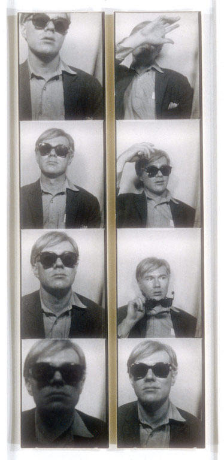

Title: Untitled Marilyn Manroe, 1967
Medium: Screenprint
Dimensions: 36 x 36 in.

Title: Green Coca-Cola Bottles,1962
Medium: Acrylic, Screen Print and Graohic Pencils on Canvas
Dimensions: 82 3/4 x 57 1/2 in.
Andy Warhol was an American artist who was a leading figure in the visual art movement known as pop art. His works explore the relationship between artistic expression, celebrity culture, and advertisement that flourished by the 1960s.